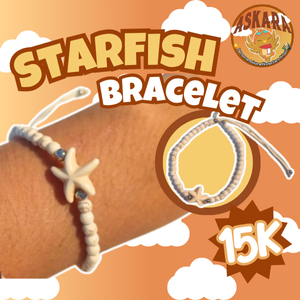
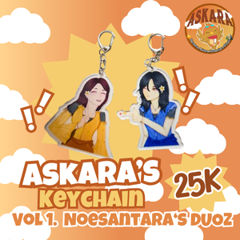
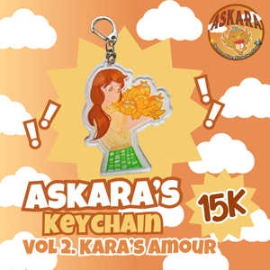
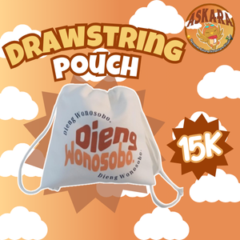
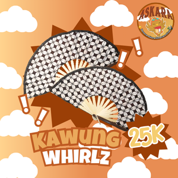
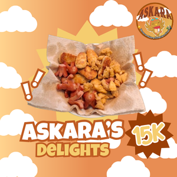
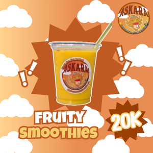
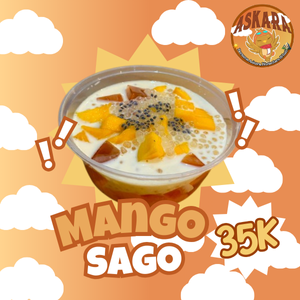
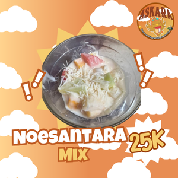
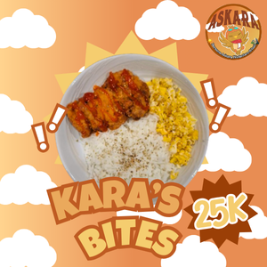
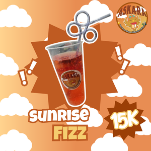
Starfish Bracelets
Produk Starfish Bracelet ini bisa ditemukan di Toko ASKARA dengan harga Rp15.000.
ASKARA'S KEYCHAIN VOL.1: Noesantara Duoz
Hanya dengan Rp 25.000 sudah mendapatkan 2 gantungan kunci, untuk menciptakan kenangan
indah bersama sahabat terdekatmu!.
ASKARA'S KEYCHAIN VOL.2: Kara's Amour
Berbeda dengan gantungan kunci ASKARA volume pertama, untuk model gantungan kunci satu ini,
kami menjual dengan harga Rp. 15.000 per pcs (hanya mendapat satu pcs saja).
Drawstring Pouch (Pouch Serut)
Dengan harga Rp 15.000 saja sudah bisa mendapatkan satu pouch berkualitas hanya di
toko ASKARA.
Retro Sticker Packs
Kami menjual Retro Sticker Pack ini dengan harga Rp 1.000 per pcs.
Kawung Whirlz (Kipas Motif Batik Kawung)
Untuk Kipas motif batik kawung ini, kami menjual dengan harga Rp.
25.000 per pcs.
ASKARA Delights (Sosis Nugget Askara)
Kami menjual hidangan ini dengan harga hanya 15.000 per piring dengan
isi yang melimpah.
Fruity Smoothies (Smoothies Pisang Mangga)
Minuman ini diberi harga 20.000 per gelas, dan dijual hanya di toko ASKARA.
Mango Sago
Hidangan segar ini eksklusif tersedia di toko ASKARA dengan
harga Rp35.000.
Noesantara Mix (Salad Buah)
Hidangan segar dan sehat ini sedia di toko ASKARA dengan harga
Rp25.000.
Kara's Bites (Nasi + Ayam Fillet Goreng + Scrambled Egg)
Dengan harga Rp25.000, kamu bisa menikmati sajian hidangan yang mengenyangkan dan lezat, loh!
Sunrise Fizz
Kami menjual minuman menyegarkan ini dengan
harga hanya Rp 15.000. Dengan harga terjangkau, kamu bisa mendapatkan minuman yang menyegarkan di cuaca yang panas ini!